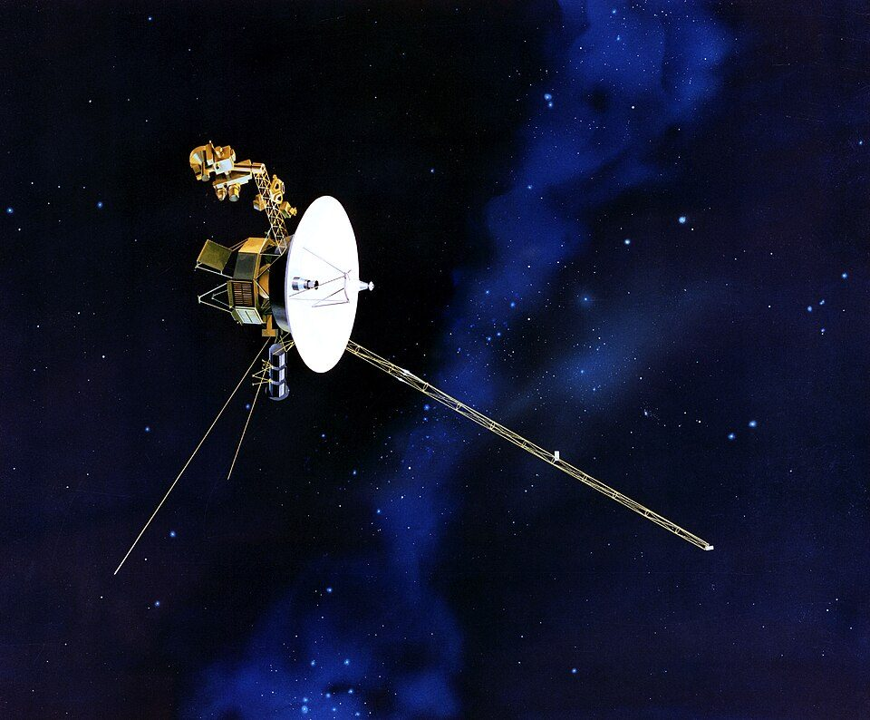

Space probes
Robots that have visited every planet, landed on comets and left the solar system. The Voyagers are still sending data almost 50 years on.


Almost everything we know close up about the planets we have learned from robotic probes: uncrewed craft that travel for years, sometimes decades, and radio their data home with less power than a light bulb.
The Voyagers: the farthest travellers
The twin probes Voyager 1 and 2 were launched in 1977 to take advantage of an alignment of the outer planets that happens only every 175 years. Voyager 2 is the only spacecraft to have visited Uranus and Neptune. In 2012 Voyager 1 crossed the boundary of the solar wind into interstellar space; Voyager 2 followed in 2018.
In late 2026 Voyager 1 becomes the first human-made object one light day from Earth: about 26 billion kilometres. Its messages take 24 hours to arrive. It runs on nuclear generators that lose power every year, and NASA keeps switching off instruments to extend its life.
Each Voyager carries a Golden Record with greetings in 55 languages, sounds of Earth, music by Bach, Beethoven and Chuck Berry, and 116 images, in case a civilisation ever finds it.
Great missions
| Probe | Destination | Highlight |
|---|---|---|
| Mariner 4 (1964) | Mars | First close-up photos of another planet |
| Venera 7 (1970) | Venus | First landing on another planet |
| Pioneer 10 and 11 (1972–73) | Jupiter and Saturn | First to cross the asteroid belt |
| Galileo (1989) | Jupiter | Evidence of an ocean under Europa's ice |
| Cassini–Huygens (1997) | Saturn | 13 years in orbit; the Huygens probe lands on Titan |
| Rosetta (2004) | Comet 67P | First landing on a comet (Philae, 2014) |
| New Horizons (2006) | Pluto | First flyby of Pluto (2015) and of Arrokoth |
| Juno (2011) | Jupiter | Studies the planet's poles and interior |
| Parker Solar Probe (2018) | The Sun | Fastest human-made object: 692,000 km/h |
| OSIRIS-REx (2016) | Asteroid Bennu | Brought samples to Earth in 2023 |
The cosmic billiards trick
To travel far without burning huge amounts of fuel, probes use a gravity assist: they pass close to a planet and use its gravity and motion to speed up and change course, like a billiard ball bouncing off another. That is how Voyager 2 hopped from Jupiter to Saturn, Uranus and Neptune.
On their way now
- BepiColombo (ESA and Japan), bound for Mercury, entering orbit in November 2026.
- Juice (ESA), heading for Jupiter's icy moons, arriving in 2031.
- Europa Clipper (NASA), heading for Europa, arriving in 2030.
- Lucy (NASA), visiting Jupiter's Trojan asteroids.
- Hera (ESA), heading for the asteroid Dimorphos, which NASA deliberately deflected in 2022.
Videos to understand it better
- The Insane Engineering of the Parker Solar ProbeReal Engineering · 4M views
- The 7 Coolest Active Space ProbesSciShow · 241K views
Videos are from YouTube and belong to their creators. They only load when you click them. See all videos →